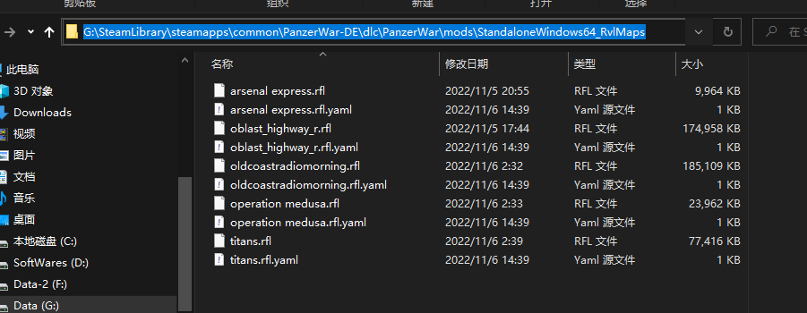

7. Ravenfield 地图模组支持 Ravenfield Map Tool Support
版权合规 Copyrights
** 注意，请勿将没有版权的 Ravenfield 的地图提交到我们游戏的创意工坊，我们会立刻进行删除的处理。在使用此功能前，请确保你拥有正版的 Ravenfield。**
如果你是 Ravenfield 的地图所有者，我们欢迎你将你的 Ravenfield 地图直接提交到装甲纷争的创意工坊！
Attention！ You are not allowed to submit ravenfield map to our workshop if you do not have the copyright. And Please be sure you have owned the Revenfield in Steam first!
If you are the owner of the ravenfield map,you are welcome to submit it to our workshop!!!
介绍 Description
针对 Steam 的普通版，我们增加了对 Ravenfield 的创意工坊的支持。
For Panzer War : Lit on Steam, we add support for mod tool maps from Ravenfield.
Step.1 如何获取 Ravenfield 的 Mod 地图？How to get Ravenfield mod maps?
打开 Ravenfield 的创意工坊 https://steamcommunity.com/workshop/browse/?appid=636480&requiredtags[]=Maps+-+Mod+Tools，订阅 Mod Tool 的 Mod 地图，然后在本地的 SteamLibrary\steamapps\workshop\content\636480 路径找到对应的 rfl 文件，此文件即为 Ravenfield 的 Mod 地图
Open the workshop of Ravenfield.https://steamcommunity.com/workshop/browse/?appid=636480&requiredtags[]=Maps+-+Mod+Tools Subscribe Mod Tool Maps. Then you can find rfl files from SteamLibrary\steamapps\workshop\content\636480
Step.2 如何给装甲纷争安装 Ravenfield 的 Mod 地图 How to install it for Panzer War?

将 Ravenfield 的 rfl 结尾的地图，放在 SteamLibrary\steamapps\common\PanzerWar-DE\dlc\PanzerWar\mods\StandaloneWindows64_RvlMaps 路径下，即可使用 Ravenfield 创意工坊的 Mod 地图。同时，在游戏启动后，会在地图文件路径处生成一份 Yaml，可用于自定义出生点以及寻路点的坐标。
Place rfl files to SteamLibrary\steamapps\common\PanzerWar-DE\dlc\PanzerWar\mods\StandaloneWindows64_RvlMaps Then open the game. A yaml file will be created after game is opened, you can change the yaml to custom the spawn points and patrol points.
Q&A
如果出生点出生在异常位置，请使用进阶配置，调整自定义出生点。 If the start point is wrong, please use custom points.
部分地图会导致游戏 Crash。 Some maps will crash game.
进阶：如何配置自定义出生点 Advance: Configure custom points
在放完 rfl 文件后，重新启动一次游戏。即会在 rfl 同目录下，生成一个 yaml 文件
将 isCustomPoints 的 false 改为 true，修改下方 x,y,z 坐标为想要的位置
Config the yaml file created in step.2
# @Comment: 是否自定义出生点 @Type: System.Boolean
isCustomPoints: false
# @Comment: A 队出生点 @Type: ShanghaiWindy.Core.Data.SerializeVector3[]
customTeamASpawnPoints:
- x: 0
y: 0
z: 0
# @Comment: B 队出生点 @Type: ShanghaiWindy.Core.Data.SerializeVector3[]
customTeamBSpawnPoints:
- x: 0
y: 0
z: 0
# @Comment: 寻路点 @Type: ShanghaiWindy.Core.Data.SerializeVector3[]
customPartolPoints:
- x: 0
y: 0
z: 0
# @Comment: 寻路烘培参数 @Type: System.Int32
tileSize: 512
# @Comment: 寻路烘培参数 @Type: System.Single
voxelSize: 2
可添加多个出生点以及寻路点，如下图所示
customTeamASpawnPoints:
- x: 0
y: 0
z: 0
- x: -4
y: 0
z: -4
- x: 4
y: 0
z: 4
进阶：如何打包为 ModPackage
将 rfl 与 对应 yaml 文件 用 zip 形式进行压缩，然后将后缀从 zip 改为 modpack ，将文件命名改为 StandaloneWindows64_任意名称.modpack ，即可随地图与出生点配置信息分享给其他人。